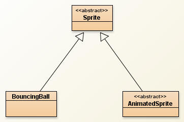
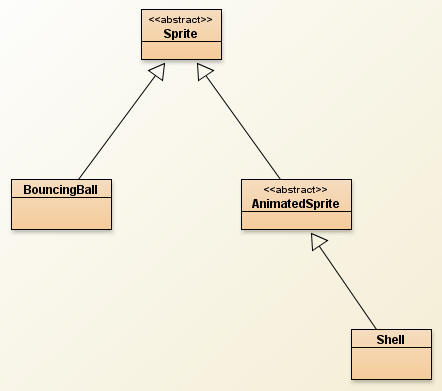
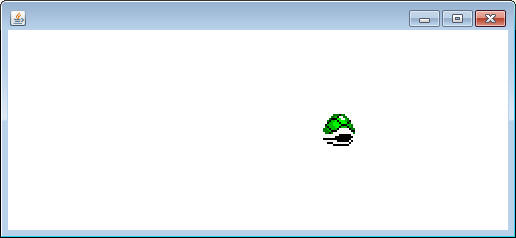

The BouncingBall class is a relatively simple extension of the Sprite class, but in an actual video game you're probably going to want to see some animation. This means that we're going to have to use a series of Picture objects to paint the Sprite.
The AnimatedSprite class:
Create a class named AnimatedSprite, which will extend the Sprite class. We have no intention of overriding the inherited abstract method paintSelf, so declare the AnimateSprite class as abstract.
Instance Fields:
-An array of Pictures, which will hold all of the Picture objects that the AnimatedSprite uses to represent itself. I'll refer to this as the Picture strip
- An int to represent the index of that array that we're currently on. Changing this int will be how we change the Picture that is displayed.
Constructor:
public AnimatedSprite(double x, double y, int w, int h)
This will be simply a single call to the super's constructor. Note that the Picture[] will not be initialized here. This is dangerous so we must be careful.
Methods:
All of the methods in the AnimatedSprite class involve deciding what Picture to paint.
public void setPictureStrip(Picture[] strip)
This is the method that will set the instance field. When we're extending this class we must make sure that this method gets called. Otherwise our program will crash with a NullPointerException.
public Picture currentImage()
This method will return the Picture in the array that is represented using the index instance field.
public void changeImage()
This method will increment the index instance field. Make sure that if the index goes out of bounds that it is set back to zero.
public void paintSelf(Canvas c)
This method will paint the current image at the inherited x,y,width, and height.
public void update()
We've made the AnimatedSprite class more complicated than the Sprite class, so we need to override the update method. Call the original update method, and also call the changeImage method. Otherwise the Picture will never change.
Extending AnimatedSprite

Create a class named Shell that extends the AnimatedSprite class.
Constructor:
public Shell(double x,double y)
This method should make a call to super's constructor. You can assume that the width and height are both 32. There are two inherited fields that you still need to set up:
- Set the x velocity to 15. The shell will travel only horizontally.
- Set up the Picture[]. Getting an array of Pictures can be arduous. Luckily sacco.jar has a helpful method that you can use.
Picture[] pics = SpriteLoader.greenShellPics();
This will load the array of Pictures that you need into the pics variable. You simply need to call the inherited method to set the instance field.
processBoundary:
Shell has inherited an abstract method that must be overridden. Override the proccessBoundary method and make it similar to the one in BouncingBall, except it doesn' t have to be so strict. If the Shell goes over the left or right, flip the xVelocity. You don't have to add the horizontalBounce method if you don't want to.
Testing:
That's it. All the other necessary methods already exist. Test it with the following method:
public static void shellRunner()
{
Shell[] shells = new Shell[1];
shells[0] = new Shell(0,84);
shells[0].setBoundary(new BoundingBox(0,0,500,200));
SpriteViewer sv = new SpriteViewer(shells);
sv.setSize(500,200);
sv.launch();
}
The Shell should bounce back and fourth in the window. Make sure that the images are changing.
